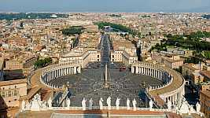
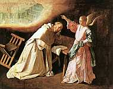

El cristianismo es todo un drama. Muchos han exclamado que a Jesús lo inventaron para reducir un poco el psicodrama que era el dios del Viejo Testamento, conocido como Jehová en algunos círculos, y podemos hacer una lista considerable de todos sus divinos berrinches. El primero, más obvio e importante, es que decidió ‘crear’ a un animal potencialmente inteligente y mantener en secreto absolutamente todo al respecto. Más aún, disfrazar el relato en enmarañadas parábolas, aburrida ficción y repelente fantasía y todo, aparentemente, bajo la juiciosa condición de la adoración absoluta hacia su persona.
Había que calmarle el ego al sobrenatural muchacho.
Así que decidieron dividir su poder en tres. Tomaron una paloma (quién sabe por qué) y resolvieron convertirla en el transporte de los genes celestiales de Jehová para que embarazara a una mujer comprometida, y virgen, con un hijo al que ya había decidido matar… todo esto ocurrió, nos dicen, hace más de dos mil años. Eso es drama televisivo del peor, la pesadilla de un buen guionista, pocos lo mirarían por televisión. Y es sólo el original del Segundo Testamento, la historia sigue.
Los dioses poseen poderes que los obligan a causar o permitir calamidades extremas, sus lemas se sostienen en la ignorancia absoluta ya que, desafortunadamente, las explicaciones que surgen de estos libros religiosos no tienen que ver con la realidad, más bien con una figuración inflada de un mundo espiritual escrito por el clon malvado de Corín Tellado.
Qué excepcional sería entonces si el hecho de ser atea me eximiera de los efectos religiosos. ¡¡Estaría fantástico!! ¿Por qué debe importarme que imanes en tierras lejanas encarcelen a ateos, apedreen a mujeres violadas y ahorquen homosexuales? ¿Para qué preocuparme del drama del nuevo Papa? ¿Me afectará directamente su visión discriminante respecto a las mujeres, los ateos y los gays? ¿No debería, de todas formas, preocuparme por los demás?
El drama sobrenatural creado por el humano (por quién más) circula crudamente en la sangre Homo sapiens. Estos primeros meses del 2013 han estado repletos de este proceso dramático que rueda como la vida de Lindsay Lohan, sin embargo, lo que la joven Lohan haga puede olvidarse segundos después de leerlo o escucharlo, estas otras personas tienen el poder para imponer su ignorancia en leyes que te rigen a ti y a mí; ambos ateos o de otras religiones, o peor aún, de la misma religión pero con las neuronas en otro tipo de mentalidad.
Indiscutible el drama. Un Papa que renuncia, su club religioso se abre al turismo, los celulares graban el humo negro, el clamor baja, la espera continúa, chistes en Facebook, fotos en G+ y menos de 140 palabras en Twitter. ¿Es blanco el humo?, ¡Uy, siiiii, mira, mira, ya es blanco! Habemus Papa… y sale entonces el Francisco I. El Papa Americano. El video se vuelve viral, los chistes pululan, miles de católicos lloran, lo declara humilde, un hombre de Dios; pero también retoña el horror de un individuo ligado a muertes, brotan citas de un tipo ahogado en la segregación sexual, en la ignorancia sobre la identidad del individuo y sus preferencias en el amor y el sexo, un tipo que no representa la libertad y el conocimiento ni desea llevar a la iglesia más allá del mismo odio de siempre hacia lo distinto. La ‘bully’ por excelencia.
Si no lanzaras tu injusta ira hacia mí, no me importaría tu dramaturgia.
“En el mundo religioso está el Papa”, dijo para CBS Hans Wiersma, profesor de religión en Augsburg College en Minneapolis, Estados Unidos. “El Papa es un líder moral, es como un Dalai Lama, es la cara más pública que se tiene del cristianismo”.

Y ya sabemos lo que significa el cristianismo. En el occidente, es la creencia por ‘de facto’ y en algunos países el catolicismo ha sido y todavía es la religión principal. De hecho, hay 1,200 millones de católicos que conforman un 17 por ciento de la población mundial.
“Otras religiones cristianas llevan aproximadamente otros mil millones y las políticas del Papa conducen la conversación”, asegura Wiersma.
Aunque no todas las iglesias cristianas están de acuerdo. Existen más de treinta mil denominaciones bajo el nombre de Cristo, con la misma Biblia como constitución; cada una de ellas tiene una interpretación distinta de la misma palabra del mismo Jehová.
“Creo que todos debemos interesarnos en la elección papal. Debido a que, en muchos sentidos, para bien o para mal, el cristianismo todavía pasa por Roma. Y no hay ningún representante más visible en todo el mundo cristiano que el obispo de Roma. Si la iglesia cristiana es de hecho la ‘familia de Dios’, entonces la división actual entre Roma y sus diversos protestantismos es parte de una disputa familiar permanente y profunda, que debe entristecer a cualquiera que valore la fe de ‘Aquel’ que oró para que “todos sean uno, como tú, Padre, estás en mí y yo en vosotros” (Juan 17:21)”, escribió el reverendo protestante Travis Scholl para el periódico de St. Louis.
¿Y qué pasa si no eres parte de la reñida familia? ¿Qué ocurre cuando decides no pertenecer a ninguna de esas familias en el planeta? ¿Es eso posible?
“Existen implicaciones políticas. El Papa es el jefe de estado de la Ciudad del Vaticano y tiene voz en los acontecimientos mundiales”, expresó Charles Reid, experto en derecho católico y profesor de la Universidad de St. Thomas en St. Paul.
Tristemente, vivimos en una época donde la pregunta: “¿por qué no está preso ese dirigente político?”, es asquerosamente común. Lo mismo ocurre con los religiosos, la iglesia católica tiene una cola bastante larga que pisar y a menudo usa su poder social y económico para promover una agenda antigay, antiaborto y antimujeres.
Por ejemplo, durante el último ciclo electoral, la Iglesia Católica donó casi dos millones de dólares en esfuerzos anti-LGBT (contra todos los que no sean estrictos heterosexuales). En diciembre, el ex Papa Benedicto XVI exigió a organizaciones católicas de caridad cesar toda actividad que “ofenda la doctrina católica”, como la promoción del uso de condones para el sexo seguro y la práctica de otras formas de control de natalidad. Tampoco podemos esperar algún tipo de raciocinio en cuanto a las células embrionarias y otros avances biológicos en la educación; la voz del dios católico continúa escupiendo absurdos; es el avance del que tiene poder y fuerza, no del que piensa, tampoco del justo ni el honesto.
Pero, ¿por qué tengo que pagar yo por las riñas de la familia de mi vecino?
Sólo los miembros del catolicismo deberían regirse por las normas del Vaticano pues ellos han decidido seguir a su líder; ser católico no es lo mismo que ser ciudadano pues sólo si sales del país donde vives podrás ignorar las normas de su gobierno. Pero católico puedes dejar de ser en cualquier momento y en cualquier lugar, no tienes que mudarte ni siquiera tienes que dejar de creer en dios, de hecho, puedes hasta elegir uno, el que más te guste.
Pero el nuevo Papa americano no es un aliento de frescura que impulsará a la iglesia hacia el progreso. Muchos lo piensan un fanático extremista con ideas tan atrasadas que sólo estimularán el crecimiento del agnosticismo y el ateísmo por todo el mundo y disminuirán la membresía en el club. Como el Papa anterior, sus nociones proponen escenarios absurdos que ya no mueven el pensamiento, no sólo en el mundo secular, sino en el mundo espiritual que se considera liberal, donde los seres sobrenaturales no tienen dueño ni promueven prejuicios, ni la espiritualidad implica el enriquecimiento de unos cuantos. Ciertamente, todavía tengo que preocuparme por los humos del Vaticano y la influencia que pueda ejercer en miles de millones… últimamente, por suerte, los primitivismos ilógicos de sus papas están haciendo más por el mundo secular que por la organización misma. Lo ideal es que el estado se desligue de cualquier iglesia y que los derechos humanos dicten las normas de conducta de todo el Homo sapiens sobre el planeta. No sabemos cuándo, si alguna vez, alcanzaremos ese ideal.
Si no quieres que algo reaparezca quémalo, no lo entierres
Sólo para miembros
De acuerdo con la doctrina católica, el Papa es el sucesor de San Pedro, líder de los apóstoles después de la muerte y resurrección de Jesucristo. Este es un factor importante en la tradición pues se piensa que el Papa tiene jurisdicción sobre toda la iglesia cristiana en materia de fe, moral y el gobierno de la iglesia. Los católicos creen que el obispo de Roma hereda el manto de Pedro, apóstol de Jesucristo, a quien se confió la administración de su iglesia después de su muerte. Pedro viajó a Roma, donde se cree estableció una comunidad cristiana antes de ser martirizado.
¿Qué es lo primero que vemos en toda esta tradición? Que estamos, ante todo, enfrentándonos con el nacimiento de una religión patriarcal donde el sexo femenino es excluido absolutamente y se le niega cualquier participación más allá de ser el mero objeto, la ruta por donde caminan los hombres que lo pisotean y lo usan. Por lo menos, los archivos gnósticos otorgaban a María Magdalena una relación más igualitaria dentro del pensamiento en los salmos bíblicos, una participación que los editores de la biblia decidieron erradicar.
Si no quieres que algo reaparezca quémalo, no lo entierres.
Ciertamente, el nuevo papa no es muy amigo de las mujeres y sigue los decretos de los antiguos editores bíblicos.
“Lo que el mundo necesita es un ‘Papa Hippie’, de esos que te hablan de Jesús el revolucionario, amante del sexo y amigo de las mujeres, de la paz y de la locura… de la justicia y la libertad. Pero este nuevo Papa tiene un historial en temas de la mujer bastante pésimo. Como conservador, describe el movimiento a favor del aborto como una “cultura de la muerte”; continúa con el absurdo al mantener también una posición en contra de los anticonceptivos y se opuso a los esfuerzos del gobierno argentino de distribuir anticonceptivos en forma gratuita”, explica la psicóloga Rita Asuencia, quien se denomina cristiana sin ninguna afiliación en particular.

Más aún, Bridget María Meehan de la Asociación del Sacerdocio para Mujeres Católicas (ARCWP) espera que el Papa Francisco I reconozca la igualdad de derechos entre los sexos.
“Esperamos que se haga cargo del elefante en la sala de la iglesia y reconozca a las mujeres y a los hombres en pie de igualdad en el Evangelio, permitiendo que las mujeres ocupen altos puestos de trabajo en la Curia (el órgano del gobierno central de la Iglesia Católica). Pero a pesar de las protestas, el Vaticano no reconoce el sacerdocio de las mujeres”, expresó.
Tampoco es amigo de los gays este Papa. A pesar de visitar un hospicio donde lavó los pies de pacientes con SIDA, el Papa Francisco ha afirmado que el matrimonio gay es del diablo. En una carta a los monasterios de Buenos Aires respecto al matrimonio homosexual escribió: “No seamos ingenuos, no estamos hablando sobre una batalla política simple; es una pretensión destructiva en contra del plan de Dios”.
Y la adopción gay ni se diga, es una discriminación en contra de los niños, asegura. Pero prefiere que se traiga vida no deseada por la cual él, decididamente, no se interesará, ni siquiera los padres heterosexuales del pobre bebé que a lo mejor no encuentre una buena pareja adoptiva porque algunos como el Papa creen que el amor humano es exclusivo de los heterosexuales casados.
A pesar de todo eso, Papa Francisco I es ahora el hombre más poderoso de la Iglesia católica. Puede que haya sido un “hombre del pueblo” que tomaba el transporte público a su trabajo y se negara a estar más alto que los cardenales durante su primer discurso, pero aún tiene que promulgar políticas reales. ¿Cómo puede un individuo mostrar ese tipo de humildad hacia sólo un grupo de personas mientras arrebata a otros todo tipo de dignidad? ¿Realmente piensa la iglesia que si las mujeres dejamos de pensar y los gays dejan de casarse el mundo estará mucho mejor? ¿En qué sentido y mejor para quiénes? ¿Es que no leen historia?
La apostasía hacia otra religión o hacia el ateísmo no te exonera de los efectos sociales que un líder moral aún con poder político y económico puede tener sobre ti y los tuyos. Tampoco te exonera de una sutil discriminación que en muchos lugares ha llegado a convertirse en asesinato. Por ello es importante examinar las religiones; el pasado nos recuerda claramente lo peligrosas que han sido y que todavía pueden ser.
Volver al índice de la Lupa Herética
© 2008-2025 Glenys Álvarez y Sin Dioses. Prohibida la reproducción con fines comerciales.
Comentarios
Comments powered by Disqus